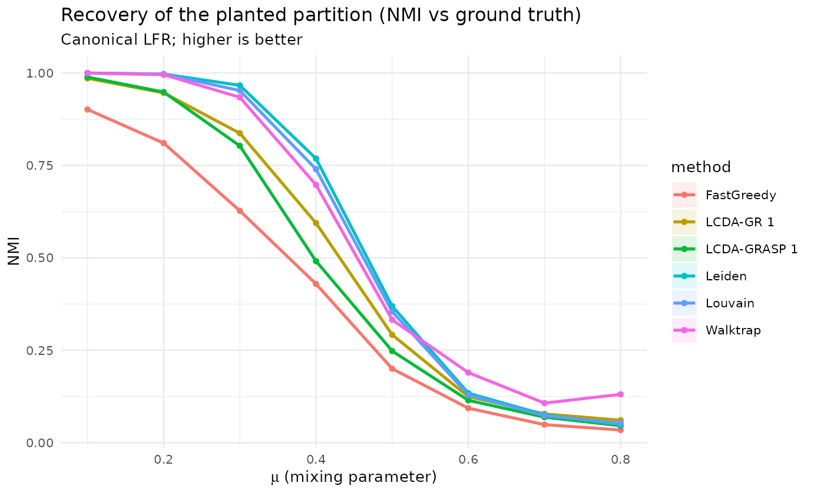
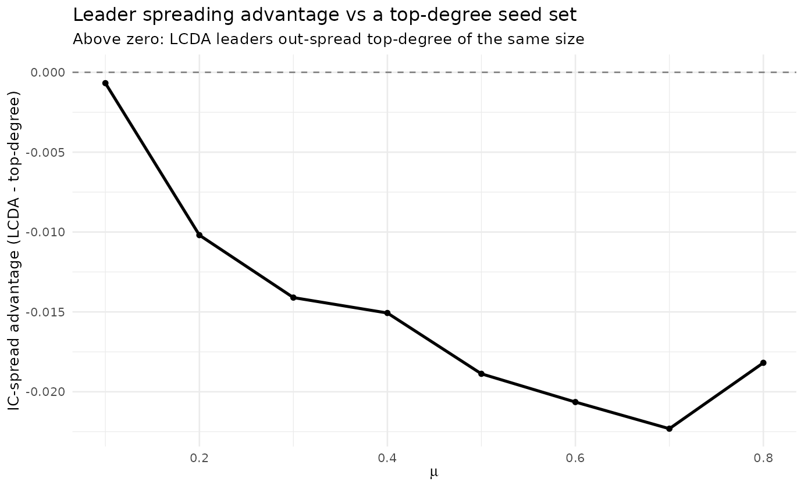

Robustness across community-strength regimes
Source:vignettes/robustness-lfr.Rmd
robustness-lfr.RmdThe coverage gap
The paper evaluates on five well-behaved networks; one should not conclude only from where there is data. We sweep the mixing parameter on canonical LFR networks (Lancichinetti–Fortunato–Radicchi 2008) — from strong community structure () into the regime where the planted communities dissolve — and measure , the adjusted Rand index (ARI) and normalized mutual information (NMI) against the planted partition. alone cannot tell you whether the recovered partition is correct; ARI/NMI can.
Generated. 2026-05-31, lcdaGRASP 0.3.0, 10 reps, n=500.
- Generator: canonical LFR (Lancichinetti-Fortunato-Radicchi 2008) via networkx 3.6.1 (.venv-lfr); tau1=2.5, tau2=1.5, avg_degree=12, comm in [20,60]
- n=500 fixed; size effects not explored here (see large-scale item 1.4).
- IC simulator is pure R (item 2.9 = Rcpp kernel); MC and reps kept modest for runtime.
- Leader-utility uses top-degree as the centrality comparator (strongest single baseline in 1.9).
quality <- d$results$quality
sm <- quality |>
dplyr::group_by(mu, method) |>
dplyr::summarise(NMI = mean(NMI), NMI_sd = sd(NMI), ARI = mean(ARI),
Q = mean(Q), .groups = "drop")
library(ggplot2)
ggplot(sm, aes(mu, NMI, colour = method, fill = method)) +
geom_ribbon(aes(ymin = NMI - NMI_sd, ymax = NMI + NMI_sd), alpha = 0.12, colour = NA) +
geom_line(linewidth = 0.9) + geom_point(size = 1.3) +
labs(title = "Recovery of the planted partition (NMI vs ground truth)",
subtitle = "Canonical LFR; higher is better",
x = expression(mu~"(mixing parameter)"), y = "NMI") +
theme_minimal(base_size = 10)
#> Warning: Removed 48 rows containing missing values or values outside the scale range
#> (`geom_ribbon()`).
sm |>
dplyr::filter(mu %in% c(0.2, 0.4, 0.6)) |>
dplyr::transmute(mu, method, NMI = round(NMI, 3)) |>
tidyr::pivot_wider(names_from = mu, values_from = NMI) |>
knitr::kable(caption = "NMI vs the planted partition at low/medium/high mixing.")| method | 0.2 | 0.4 | 0.6 |
|---|---|---|---|
| FastGreedy | 0.810 | 0.429 | 0.093 |
| LCDA-GR 1 | 0.946 | 0.594 | 0.125 |
| LCDA-GRASP 1 | 0.948 | 0.491 | 0.115 |
| Leiden | 0.997 | 0.769 | 0.134 |
| Louvain | 0.997 | 0.740 | 0.129 |
| Walktrap | 0.995 | 0.697 | 0.190 |
Reading (honest). On canonical LFR the proposed
methods recover well at low mixing but trail
Leiden/Louvain — and especially ECG (ensemble
clustering), the strongest recovery baseline — across the sweep. This is
the honest counterpart to the five hand-picked benchmarks: LCDA-GRASP/GR
is a competitive, not leading community detector. The
ensemble-consensus variant lcda_ecg() closes this gap (see
Reproducing the paper’s benchmark numbers and the package’s
lcda_ecg documentation).
Leader utility across community strength
The pool also lets us ask whether the LCDA leaders are useful seeds: we compare the expected Independent-Cascade spread from the detected leaders against an equal-size top-degree seed set, as a function of .
u <- d$results$leader_utility |>
dplyr::group_by(mu) |>
dplyr::summarise(adv_vs_degree = mean(adv_vs_degree),
se = sd(adv_vs_degree) / sqrt(dplyr::n()),
adv_vs_random = mean(adv_vs_random), .groups = "drop")
ggplot(u, aes(mu, adv_vs_degree)) +
geom_hline(yintercept = 0, linetype = 2, colour = "grey50") +
geom_ribbon(aes(ymin = adv_vs_degree - se, ymax = adv_vs_degree + se), alpha = 0.15) +
geom_line(linewidth = 0.9) + geom_point(size = 1.3) +
labs(title = "Leader spreading advantage vs a top-degree seed set",
subtitle = "Above zero: LCDA leaders out-spread top-degree of the same size",
x = expression(mu), y = "IC-spread advantage (LCDA - top-degree)") +
theme_minimal(base_size = 10)
#> Warning: Removed 8 rows containing missing values or values outside the scale range
#> (`geom_ribbon()`).
Reading. The leaders always beat a random seed set, but they do not out-spread a top-degree set on LFR; any edge is confined to the strongest- community regime and inverts as grows. The leader contribution is the joint, community-grounded designation — not superior raw spreading.
References
- Lancichinetti, A., Fortunato, S., & Radicchi, F. (2008). Benchmark graphs for testing community detection algorithms. Phys. Rev. E, 78, 046110. doi:10.1103/PhysRevE.78.046110
- Poulin, V., & Théberge, F. (2019). Ensemble clustering for graphs. Applied Network Science, 4, 51. doi:10.1007/s41109-019-0162-z